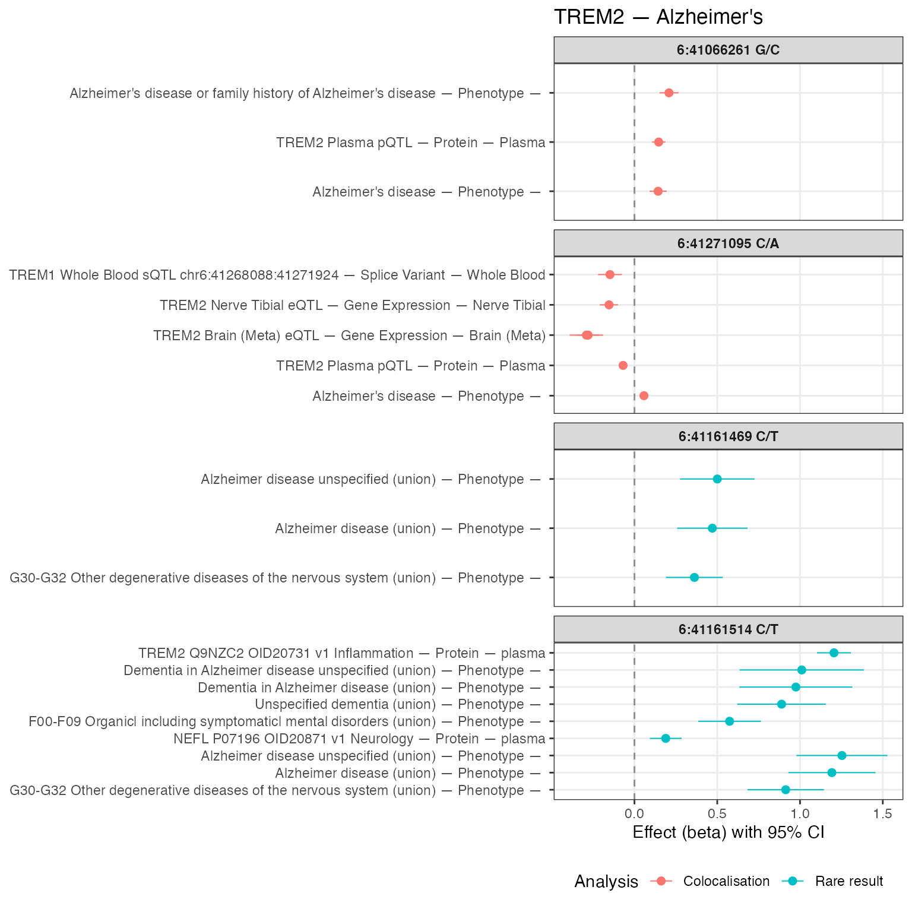

Using gpmapr
gpmapr.Rmd
library(gpmapr)Getting started
The first port of entry is the search_gpmap function.
This function allows you to search for a trait, gene, or variant.
haemoglobin <- search_gpmap("haemoglobin")
knitr::kable(haemoglobin[, c("name", "sample_size", "num_coloc_groups", "call")])| name | sample_size | num_coloc_groups | call | |
|---|---|---|---|---|
| 43431 | Glycated haemoglobin levels | 146806 | 93 | trait(915) |
| 43436 | Haemoglobin concentration | 563946 | 828 | trait(920) |
| 43438 | Mean corpuscular haemoglobin concentration | 491553 | 297 | trait(922) |
| 43447 | Haemoglobin | 408112 | 757 | trait(931) |
| 44152 | Haemoglobin levels | 445373 | 775 | trait(1636) |
| 44156 | Haemoglobin A1c levels | 437749 | 838 | trait(1640) |
| 44499 | Mean corpuscular haemoglobin | 572863 | 936 | trait(1983) |
| 45100 | Haemoglobin concentration (UKB data field 30020) | 396624 | 658 | trait(2584) |
| 45127 | Glycated haemoglobin HbA1c levels (UKB data field 30750) | 389889 | 721 | trait(2611) |
| 47275 | Haemoglobin concentration | 350474 | 497 | trait(4759) |
| 47277 | Mean corpuscular haemoglobin | 350472 | 628 | trait(4761) |
| 47278 | Mean corpuscular haemoglobin concentration | 350468 | 137 | trait(4762) |
| 52158 | Mean corpuscular haemoglobin | 430998 | 628 | trait(4761) |
| 52788 | Mean corpuscular haemoglobin concentration | 430998 | 137 | trait(4762) |
| 53046 | Glycated haemoglobin HbA1c (30750) | 430998 | 0 | trait(42778) |
| 53057 | Haemoglobin concentration | 430998 | 497 | trait(4759) |
You can see information about the different traits that match your
search, how to subsequently get more information (under
call), and metadata about the trait (under
info).
Understanding info
- Extractions: Each trait has a number of extractions, related to the number of finemapped ld regions that had a p-value < 1.5e-4.
- Colocalisation Groups: The number of colocalisation groups associated with the trait / gene / variant.
- Colocalising Traits: The number of traits that are colocalising with the trait / gene / variant.
- Rare Result Groups: Each trait has a number of rare result groups, related to the number of groups of rare result groups that had a p-value < 1.5e-4.
You can also search for a gene (by ENSG ID or gene name) or variant (by CHR:BP or rsID).
knitr::kable(search_gpmap("SLC44A")[, c("name", "sample_size", "num_study_extractions", "num_coloc_groups", "call")])| name | sample_size | num_study_extractions | num_coloc_groups | call | |
|---|---|---|---|---|---|
| 1032 | SLC44A1 (ENSG00000070214) | NA | 206 | 9 | gene(‘SLC44A1’) |
| 5825 | SLC44A2 (ENSG00000129353) | NA | 226 | 14 | gene(‘SLC44A2’) |
| 7196 | SLC44A5 (ENSG00000137968) | NA | 91 | 9 | gene(‘SLC44A5’) |
| 7921 | SLC44A3 (ENSG00000143036) | NA | 361 | 17 | gene(‘SLC44A3’) |
| 17220 | SLC44A4 (ENSG00000204385) | NA | 107 | 12 | gene(‘SLC44A4’) |
| 19708 | SLC44A3-AS1 (ENSG00000224081) | NA | 179 | 12 | gene(‘SLC44A3-AS1’) |
knitr::kable(search_gpmap("22:37042914"))| type | name | type_id | num_coloc_groups | num_coloc_studies | num_rare_results | num_study_extractions | call |
|---|---|---|---|---|---|---|---|
| original_variant | 22:37042914 T/C | 5521294 | 0 | 0 | 0 | NA | variant(5521294) |
Variant search returns proxy variants
The variant search will return the original variant and any proxy
variants that are in LD with the original variant, which also have
colocalisation results. Each variant is marked as either
original_variant or proxy_variant. In this
example, the original variant has no colocalisation results, but the
proxy variant does. The proxy variant is also marked as having a r^2 of
0.96
proxy_variants <- search_gpmap("rs17078078")
knitr::kable(proxy_variants)| type | name | type_id | num_coloc_groups | num_coloc_studies | num_rare_results | num_study_extractions | call |
|---|---|---|---|---|---|---|---|
| original_variant | 3:45579683 A/C | 5758009 | 0 | 0 | 0 | NA | variant(5758009) |
Diving in
You can get more information about a trait by subsequently calling
the trait(), gene(), or variant()
functions. This will provide you with the colocalisation results, rare
disease results, and study extractions.
Each trait, gene, or variant call have optional parameters:
-
include_associations: Whether to include associations (BETA, SE, P) of the variants in which it’s colocalised in the output. -
include_coloc_pairs: Whether to include coloc pairs in the output (which include h3 and h4), as opposed to just the coloc groups. -
h4_threshold: The h4 threshold for coloc pairs.
Trait example
hemoglobin_trait <- trait(931)
names(hemoglobin_trait)
#> [1] "trait" "coloc_groups" "study_extractions"
nrow(hemoglobin_trait$coloc_groups)
#> [1] 27999
nrow(hemoglobin_trait$study_extractions)
#> [1] 1342This returns a list of elements, which you can access by name. More detailed explanations of the below are described in the API documentation.
-
trait: A list containing metadata about the trait, including common and rare studies associated with the trait -
coloc_groups: a dataframe containing information about which studies have coloc results for this trait. -
study_extractions: a list of dataframes containing the study extractions for this trait. -
rare_results: (if they exist) a list of dataframes containing the rare results for this trait -
associations: (optional) a dataframe containing the associations for the variants in which the trait is colocalised -
coloc_pairs: (optional) a dataframe containing all pairwise coloc results for this trait.
How study_extractions, coloc_groups, and
rare_results relate
All three layers refer to study extractions (GWAS
hits in finemapped LD regions), keyed by id in
study_extractions and by study_extraction_id
in coloc_groups and rare_results.
Think of study_extractions as the
catalogue of extractions linked to the trait or gene in the map: each
row is a study signal at a locus. Not every listed extraction
necessarily has a full colocalisation story or a rare-disease result
row.
-
coloc_groupsholds extractions that sit inside a colocalisation group (shared coloc evidence with other studies/traits at that locus). If a study extraction appears here, it has coloc-structured results for that entity. -
rare_resultsholds extractions that belong to a rare-result group (rare-disease-style finemapping in the API). The same biological signal can, in principle, be reflected in both rare and common coloc paths, so overlap between this set of extraction ids and those incoloc_groupsis possible. -
Neither table: Some extractions appear only under
study_extractions. They are still tied to the trait or gene in the genotype–phenotype map (for example via locus tagging, proximity, or other association logic in the pipeline), but they do not currently carry a coloc-group row or a rare-result group row. Treat those as “present on the map at this locus” rather than “absent by mistake.”
The same idea applies when you call
gene() (or other entity-specific
endpoints): study_extractions is the wider catalogue, while
coloc_groups and rare_results subdivide it
where those analyses exist. The table below illustrates counts for the
hemoglobin trait example (trait(931)).
extraction_ids <- function(x) {
if (is.null(x) || !length(x)) {
return(integer(0))
}
id_col <- if ("id" %in% names(x)) "id" else NULL
if (!is.null(id_col)) {
return(unique(stats::na.omit(x[[id_col]])))
}
unique(stats::na.omit(unlist(lapply(x, function(df) {
if (!is.data.frame(df)) {
return(NULL)
}
if ("id" %in% names(df)) {
return(df[["id"]])
}
NULL
}))))
}
cg_ids <- unique(stats::na.omit(hemoglobin_trait$coloc_groups$study_extraction_id))
rr <- hemoglobin_trait$rare_results
rr_ids <- if (is.null(rr) || !length(rr)) {
integer(0)
} else {
unique(stats::na.omit(unlist(lapply(rr, function(d) {
if (!is.data.frame(d) || !"study_extraction_id" %in% names(d)) {
return(NULL)
}
d[["study_extraction_id"]]
}))))
}
se_ids <- extraction_ids(hemoglobin_trait$study_extractions)
only_study_extractions <- setdiff(se_ids, union(cg_ids, rr_ids))
knitr::kable(data.frame(
source = c(
"Distinct study_extraction_id in coloc_groups",
"Distinct study_extraction_id in rare_results",
"In study_extractions only (not in coloc_groups nor rare_results)",
"Total distinct extraction id in study_extractions"
),
n_extractions = c(
length(cg_ids),
length(rr_ids),
length(only_study_extractions),
length(se_ids)
)
))| source | n_extractions |
|---|---|
| Distinct study_extraction_id in coloc_groups | 27999 |
| Distinct study_extraction_id in rare_results | 0 |
| In study_extractions only (not in coloc_groups nor rare_results) | 585 |
| Total distinct extraction id in study_extractions | 1342 |
Gene example
slc44a1 <- gene("SLC44A1")
names(slc44a1)
#> [1] "gene" "coloc_groups" "rare_results"
#> [4] "variants" "study_extractions"
nrow(slc44a1$coloc_groups)
#> [1] 80
knitr::kable(head(slc44a1$coloc_groups[, c("coloc_group_id", "trait_name", "data_type", "tissue")]))| coloc_group_id | trait_name | data_type | tissue |
|---|---|---|---|
| 94137 | Treatment/medication code: dihydrocodeine | Phenotype | NA |
| 94144 | Operative procedures - main OPCS: A52.2 Therapeutic sacral epidural injection | Phenotype | NA |
| 94116 | ABCA1 Blood eQTL | Gene Expression | Blood |
| 94144 | SLC44A1 Muscle Skeletal eQTL | Gene Expression | Muscle Skeletal |
| 94146 | SLC44A1 Lung sQTL chr9:105244904:105299220 | Splice Variant | Lung |
| 94123 | Average diameter for HDL particles | Phenotype | NA |
Note that by default, the gene endpoint includes trans genetic
effects. You can turn this off with
gene("SLC44A1", include_trans = FALSE), or filter
coloc_groups after the fact (for example
cis_trans == "cis" or a min_p cutoff).
After you subset rows, some coloc_group_id values may be
left with only a single row. Those are no longer meaningful
colocalisation groups, so drop them by keeping only
groups with more than one row:
slc44a1_no_trans <- slc44a1
slc44a1_no_trans$coloc_groups <- dplyr::filter(
slc44a1_no_trans$coloc_groups,
cis_trans == "cis"
)
# or e.g. dplyr::filter(..., min_p <= 5e-8)
slc44a1_no_trans$coloc_groups <- slc44a1_no_trans$coloc_groups |>
dplyr::group_by(coloc_group_id) |>
dplyr::filter(dplyr::n() > 1L) |>
dplyr::ungroup()
nrow(slc44a1_no_trans$coloc_groups)
#> [1] 26
knitr::kable(head(slc44a1_no_trans$coloc_groups[, c("coloc_group_id", "trait_name", "data_type", "tissue")]))| coloc_group_id | trait_name | data_type | tissue |
|---|---|---|---|
| 94116 | ABCA1 Blood eQTL | Gene Expression | Blood |
| 94144 | SLC44A1 Muscle Skeletal eQTL | Gene Expression | Muscle Skeletal |
| 94144 | SLC44A1 Skin Not Sun Exposed Suprapubic eQTL | Gene Expression | Skin Not Sun Exposed Suprapubic |
| 94136 | SLC44A1 Skin Sun Exposed Lower leg sQTL chr9:105385502:105438281 | Splice Variant | Skin Sun Exposed Lower leg |
| 94144 | SLC44A1 Brain Hippocampus sQTL chr9:105299937:105309724 | Splice Variant | Brain Hippocampus |
| 94144 | SLC44A1 Lung eQTL | Gene Expression | Lung |
Coloc pairs example
Although coloc groups provide a helpful overview of the
colocalisation results for a gene, you may want to look at the pairwise
relationships between the studies. You can do this by setting
include_coloc_pairs = TRUE in the call.
As there may be many coloc pairs, the results are not as fleshed out as the coloc groups. You may have to filter the results to get the information you need, or join with the study extractions to get the full picture.
slc44a1_coloc_pairs <- gene("SLC44A1", include_coloc_pairs = TRUE)
nrow(slc44a1_coloc_pairs$coloc_pairs)
#> [1] 1096
knitr::kable(head(slc44a1_coloc_pairs$coloc_pairs[, c("study_extraction_a_id", "study_extraction_b_id", "h4")]))| study_extraction_a_id | study_extraction_b_id | h4 |
|---|---|---|
| 2469380 | 2469454 | 0.9971425 |
| 2469380 | 2469455 | 0.9969158 |
| 2469454 | 2469455 | 0.9999984 |
| 2469454 | 2469769 | 0.9071751 |
| 2469454 | 2469816 | 0.8388802 |
| 2469454 | 2469956 | 0.9998948 |
study_extractions_tbl <- dplyr::bind_rows(slc44a1_no_trans$study_extractions)
study_extractions_subset <- dplyr::select(study_extractions_tbl, id, trait_name, min_p)
hydrated_coloc_pairs <- slc44a1_coloc_pairs$coloc_pairs |>
dplyr::left_join(slc44a1_coloc_pairs$study_extractions, by = c("study_extraction_a_id" = "id")) |>
dplyr::rename(trait_a = trait_name) |>
dplyr::left_join(slc44a1_coloc_pairs$study_extractions, by = c("study_extraction_b_id" = "id")) |>
dplyr::rename(trait_b = trait_name)
knitr::kable(head(hydrated_coloc_pairs[, c("trait_a", "trait_b", "h4")]))| trait_a | trait_b | h4 |
|---|---|---|
| HDL cholesterol | Apolipoprotein A1 levels | 0.9971425 |
| HDL cholesterol | HDL cholesterol levels | 0.9969158 |
| Apolipoprotein A1 levels | HDL cholesterol levels | 0.9999984 |
| Apolipoprotein A1 levels | Phospholipids to total lipids ratio in large HDL | 0.9071751 |
| Apolipoprotein A1 levels | Phospholipids to total lipids ratio in medium HDL | 0.8388802 |
| Apolipoprotein A1 levels | SLC44A1 Blood eQTL | 0.9998948 |
Using Pleiotropy Scores and Directionality to uncover genetic insights from colocalisation findings
For the gene, distinct_trait_categories and
distinct_protein_coding_genes are available and automatically are
returned when you call gene(). These are the number of
trait categories and protein coding genes that the gene is associated
with via coloc groups.
trem2 <- gene("TREM2", include_associations = TRUE)
trem2$gene$distinct_trait_categories
#> [1] 1
trem2$gene$distinct_protein_coding_genes
#> [1] 2We can see that TREM2 is associated with only one trait category, and two other protein coding genes, TREM1 and TREML2.
Furthermore, if we look at the colocalization group that is associated with Alzheimer’s disease, we can see that the associations are such that any decrease in the expression of TREM2 is associated with an increase in Alzheimer’s disease.
alzheimer_trait_ids <- search_gpmap("alzheimer")$type_id
trem2_alzheimer_coloc_group_ids <- unique(
trem2$coloc_groups[trem2$coloc_groups$trait_id %in% alzheimer_trait_ids, ]$coloc_group_id
)
trem2_alzheimer_rare_result_group_ids <- unique(
trem2$rare_results[trem2$rare_results$trait_id %in% alzheimer_trait_ids, ]$rare_result_group_id
)
trem2_alzheimer_groups <- trem2$coloc_groups[
trem2$coloc_groups$coloc_group_id %in% trem2_alzheimer_coloc_group_ids,
]
trem2_alzheimer_rare_results <- trem2$rare_results[
trem2$rare_results$rare_result_group_id %in% trem2_alzheimer_rare_result_group_ids,
]We can see 2 colocalization groups and 2 rare result groups are associated with Alzheimer’s disease, and TREM2 are not associated with any other trait categories.
Here we have made a forest plot of the association betas relating to
Alzheimer’s disease, combining colocalisation groups
(one panel per coloc_group_id) and rare disease
result groups (facet strip shows the SNP from
display_snp, or variant_id if needed).
forest_row_label <- function(trait_name, data_type, tissue) {
tn <- if (missing(tissue) || is.null(tissue)) {
rep(NA_character_, length(trait_name))
} else {
tissue
}
paste(
trait_name,
data_type,
tidyr::replace_na(as.character(tn), ""),
sep = " — "
)
}
trem2_forest_coloc <- trem2_alzheimer_groups |>
dplyr::filter(!is.na(.data$beta), !is.na(.data$se), .data$se > 0) |>
dplyr::mutate(
lo = .data$beta - 1.96 * .data$se,
hi = .data$beta + 1.96 * .data$se,
row_label = forest_row_label(.data$trait_name, .data$data_type, .data$tissue),
panel_id = dplyr::coalesce(
as.character(.data$display_snp),
paste0("variant ", as.character(.data$variant_id))
),
analysis = "Colocalisation"
) |>
dplyr::group_by(.data$coloc_group_id) |>
dplyr::arrange(.data$beta, .by_group = TRUE) |>
dplyr::mutate(
row_label = factor(.data$row_label, levels = unique(.data$row_label))
) |>
dplyr::ungroup()
trem2_forest_rare <- if (is.null(trem2_alzheimer_rare_results) || nrow(trem2_alzheimer_rare_results) == 0L) {
NULL
} else {
rr <- trem2_alzheimer_rare_results
if (!"tissue" %in% names(rr)) {
rr$tissue <- NA_character_
}
rr |>
dplyr::filter(!is.na(.data$beta), !is.na(.data$se), .data$se > 0) |>
dplyr::mutate(
lo = .data$beta - 1.96 * .data$se,
hi = .data$beta + 1.96 * .data$se,
row_label = forest_row_label(.data$trait_name, .data$data_type, .data$tissue),
panel_id = dplyr::coalesce(
as.character(.data$display_snp),
paste0("variant ", as.character(.data$variant_id))
),
analysis = "Rare result"
) |>
dplyr::group_by(.data$panel_id) |>
dplyr::arrange(.data$beta, .by_group = TRUE) |>
dplyr::mutate(
row_label = factor(.data$row_label, levels = unique(.data$row_label))
) |>
dplyr::ungroup()
}
trem2_forest <- dplyr::bind_rows(
trem2_forest_coloc,
trem2_forest_rare
) |>
dplyr::mutate(
panel_id = factor(.data$panel_id, levels = unique(.data$panel_id))
)
ggplot2::ggplot(trem2_forest, ggplot2::aes(x = beta, y = row_label, colour = analysis)) +
ggplot2::geom_vline(xintercept = 0, linetype = 2, colour = "grey55") +
ggplot2::geom_errorbarh(
ggplot2::aes(xmin = lo, xmax = hi),
height = 0,
linewidth = 0.35
) +
ggplot2::geom_point(size = 2) +
ggplot2::facet_wrap(~ panel_id, scales = "free_y", ncol = 1) +
ggplot2::labs(
x = "Effect (beta) with 95% CI",
y = NULL,
colour = "Analysis",
title = "TREM2 — Alzheimer's"
) +
ggplot2::theme_bw() +
ggplot2::theme(
strip.text = ggplot2::element_text(face = "bold"),
panel.grid.minor = ggplot2::element_blank(),
legend.position = "bottom"
)
#> Warning: `geom_errorbarh()` was deprecated in ggplot2 4.0.0.
#> ℹ Please use the `orientation` argument of `geom_errorbar()` instead.
#> This warning is displayed once per session.
#> Call `lifecycle::last_lifecycle_warnings()` to see where this warning was
#> generated.
#> `height` was translated to `width`.
We now have a good overview of the use of TREM2 as a mechanism to investigate, and potentially target for Alzheimer’s disease. We now know:
- TREM2 is associated with Alzheimer’s disease
- TREM2 is associated with two other protein coding genes, TREM1 and TREML2, but there is no evidence of colocalisation with any other nearby genes.
- TREM2 is not associated with any other trait categories, or even any other traits.
- The direction of effect between TREM2 and Alzheimer’s disease seems to be complex. In 3 instances, an increase in the expression of TREM2 is associated with an increase in Alzheimer’s disease, and in 1 instance, a decrease in the expression of TREM2 (across many gene expression, splice variants, and protein levels) is associated with an increase in Alzheimer’s disease.
Existing literature has shown that TREM2 is associated with Alzheimer’s disease, and that TREM2 is currently being investigated as a potential target for Alzheimer’s disease.
Although the GPMap can not provide a definitive answer as a drug target for Alzheimer’s disease, it has proven to helpful in illuminating the potential pleiotropy, and of the directionality of effect that perturbing specific variants associated with TREM2 may have.
Accessing summary statistics
You can only access the summary statistics via
variant(), by including
include_summary_stats = TRUE in the call. This is to limit
the amount of data that can be returned from the API for cost reasons.
If you attempt to download too many summary statistics, you may be
blocked from the API.
variant(1669064, include_summary_stats = TRUE)
Instead, if you are interested in accessing all the summary statistics, or the whole database of results, you can download all databases and summary statistics the Google Cloud Storage Bucket, and can find an explanation of the files here. Note that the bucket is ‘requester pays’, so you will need to have a Google Cloud account and be logged in to download the files.